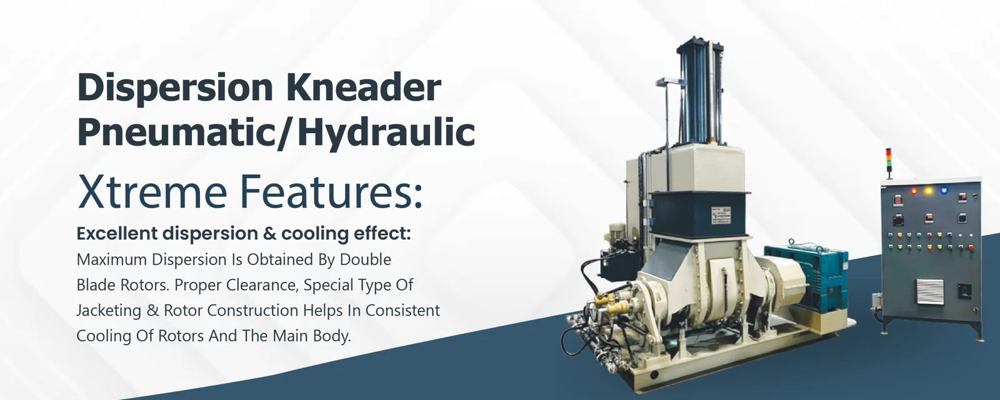
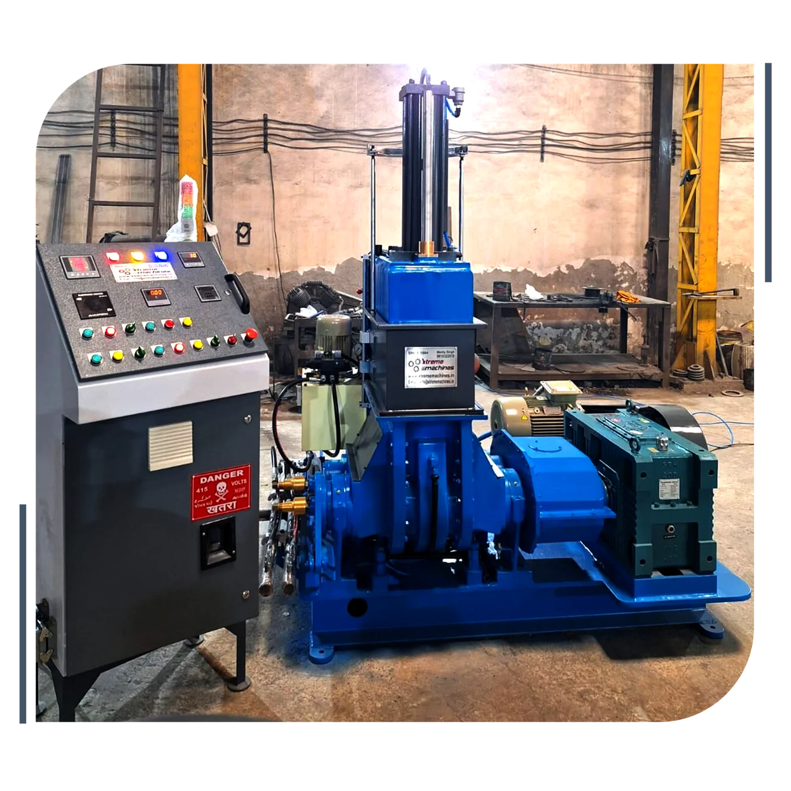
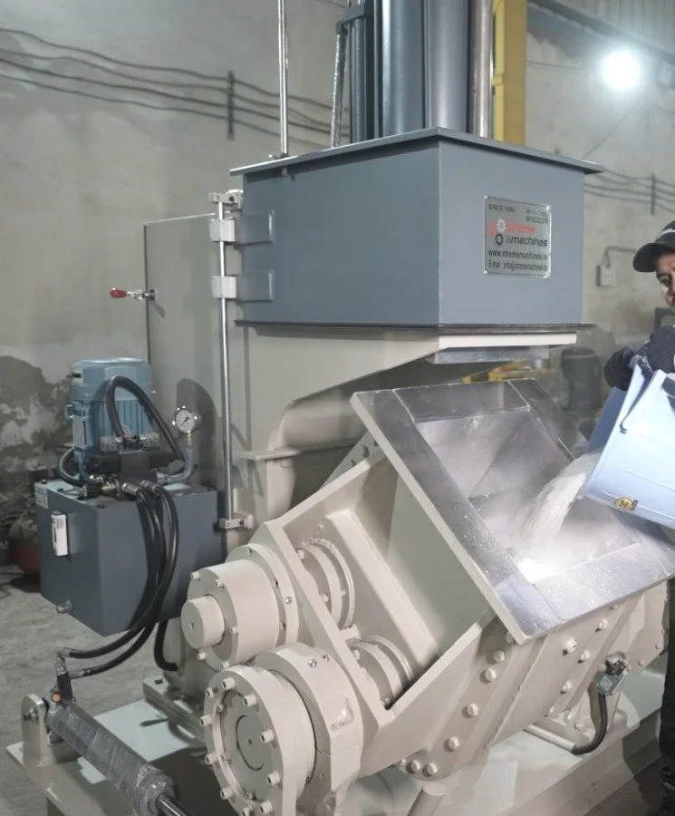
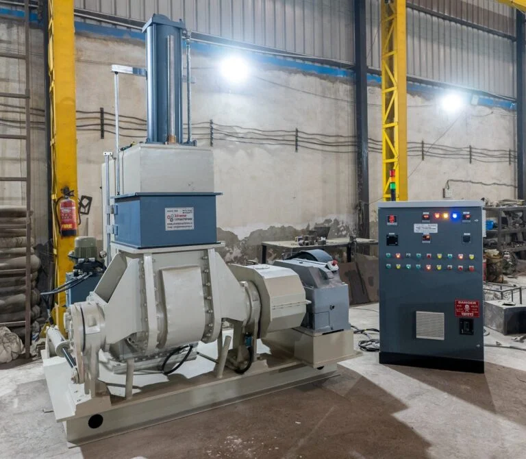
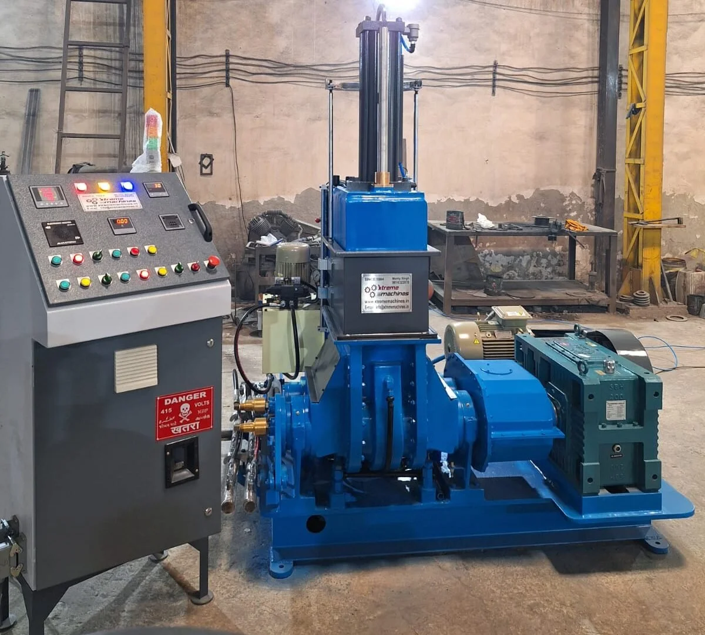
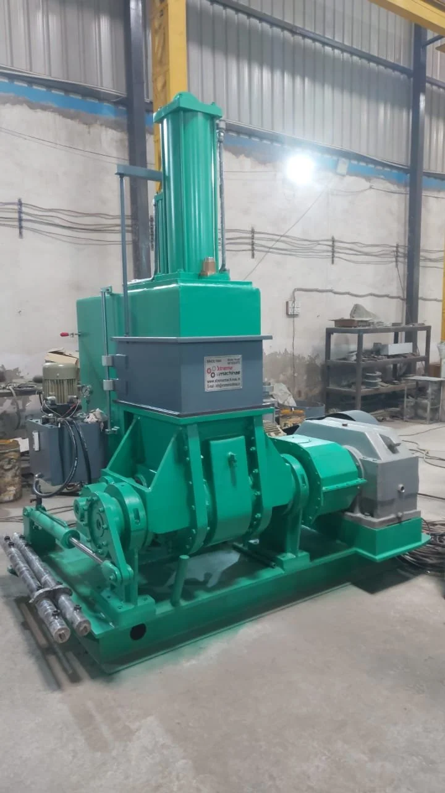
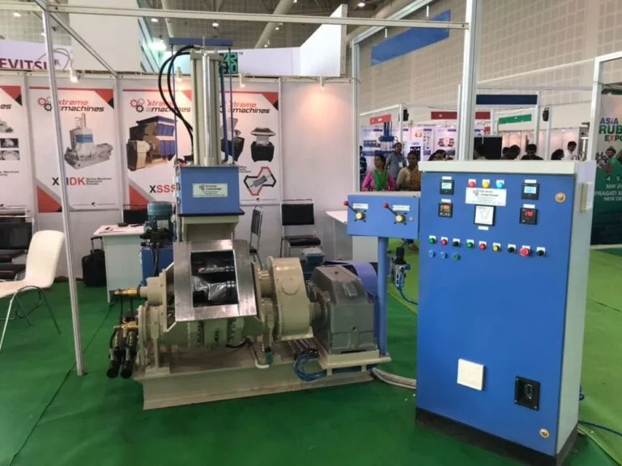
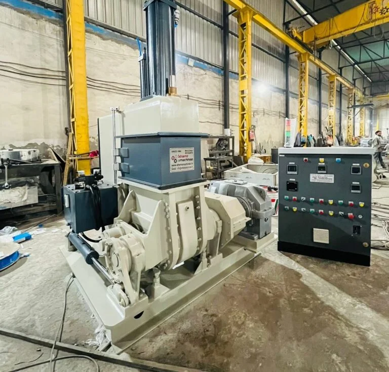
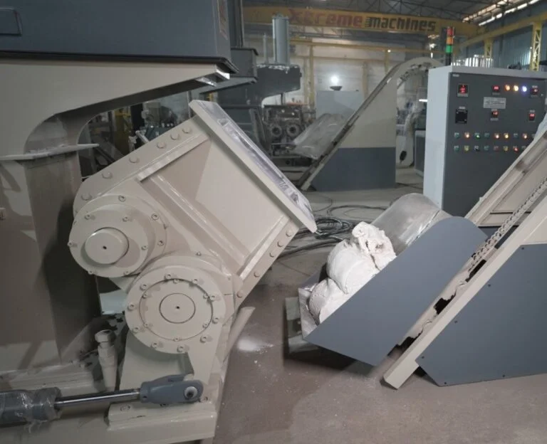
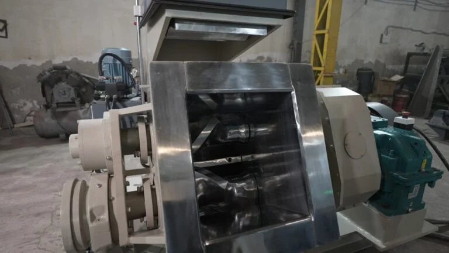

Dispersion Kneader Manufacturer in Delhi – Xtreme Machines
High-performance rubber and plastic processing equipment for industrial uses is the area of expertise for Xtreme Machines, a reputable dispersion kneader manufacturer in Delhi. Rubber, plastics, polymers, additives, fillers, and other substances can be effectively mixed, kneaded, blended, and uniformly dispersed with our dispersion kneader machines.
Xtreme Machines offers Dispersion Kneader solutions for rubber processing, plastic compounding, masterbatch production, reclaim applications, footwear, automotive components, cables, sheets, profiles, and numerous other industries with an emphasis on sturdy construction, dependable performance, effective processing, and consistent mixing quality.
Xtreme Machines provides industrial-grade machines made in accordance with manufacturing specifications, material properties, and processing applications if you're searching for a trustworthy Dispersion Kneader provider in Delhi.

Advanced Dispersion Kneader Machines for Efficient Material Processing
For industries that need to mix and disperse rubber and plastic compounds intensively, a dispersion kneader is a crucial piece of equipment. Additives, fillers, pigments, chemicals, and other materials are evenly distributed throughout the material by the machine's efficient kneading motion.
Dispersion kneaders with a robust and long-lasting design are produced by Xtreme Machines to withstand harsh industrial production settings. Our equipment is designed to assist firms increase productivity and maintain consistent product quality while providing reliable mixing performance.
Our Dispersion Kneader series includes machines with capacities ranging from 5 litres to 200 litres, depending on your production needs. For various processing applications, the machines can be set up with hydraulic tilting systems, automatic temperature control, and appropriate power needs.
- 5 – 200 Litres capacity
- 120° – 140° Tilting angle
- 10 – 270 HP power range

Why Choose Xtreme Machines as Your Dispersion Kneader Manufacturer in Delhi?
Choosing the right kneader machine directly affects mixing quality, production efficiency, and the consistency of the final product. Xtreme Machines combines industrial experience with practical machine design to provide reliable processing solutions.
Key advantages include:
- Heavy-duty and robust machine construction
- Efficient rubber and plastic compound mixing
- Uniform dispersion of additives and fillers
- Different mixing capacities for varied production requirements
- Hydraulic tilting mechanism
- Automatic temperature control options
- Suitable for demanding industrial applications
- Reliable and consistent processing performance
- Machine solutions for rubber and plastic industries
- Technical assistance and customer support
Our objective is to provide machinery that can deliver dependable performance throughout the production cycle while helping manufacturers achieve consistent processing results.
Dispersion Kneader Supplier in Delhi for Rubber & Plastic Industries
As an experienced Dispersion Kneader supplier in Delhi, Xtreme Machines serves industries that require reliable and efficient compound mixing equipment. Our Dispersion Kneader machines can be used for processing a wide range of rubber and plastic formulations, including natural rubber, synthetic rubber, plastics, polymers, fillers, additives, and blends.
The equipment is suitable for applications such as:
- Rubber compound mixing
- Plastic compounding
- Masterbatch production
- Reclaim rubber processing
- Reclaim plastic processing
- PVC compound processing
- EVA compound processing
- TPR and polymer blends
- Cable compound manufacturing
- Rubber footwear manufacturing
- Automotive rubber components
- Tyre and tube applications
- Conveyor belts and V-belts
- O-rings and oil seals
- Rubber sheets and profiles
- PVC artificial leather
- PVC flooring products
- Rubber sponge products
- Rubber toys and other molded products
This broad application range makes our Dispersion Kneader machines suitable for manufacturers operating across different rubber, plastic, polymer, and allied processing industries.

Dispersion Kneader Machine for Rubber Processing
To achieve the appropriate compound qualities, rubber processing necessitates the efficient dispersion of chemicals, fillers, colors, and other substances. A well-designed kneader promotes consistent downstream processing and increases the compound's homogeneity.
The Dispersion Kneader from Xtreme Machines is made to combine and knead various rubber compounds intensively. Applications using natural rubber, synthetic rubber, reclaimed rubber, and different rubber compounds can make use of it.
Our equipment is built to withstand harsh production conditions, from rubber sheets and shoe soles to automobile parts, belts, seals, rollers, and other rubber goods.

Dispersion Kneader for Plastic Compounding
Our machines are also suitable for several plastic processing and compounding applications. Manufacturers can use Dispersion Kneaders for materials and formulations involving PVC, EVA, TPR, LDPE, LLDPE, HDPE, HIPS, ABS, and other plastic blends.
The machine's intensive mixing action helps achieve better distribution of additives, fillers, and other ingredients, supporting consistent compound preparation before further processing.
Xtreme Machines also provides Dispersion Kneader solutions for applications such as masterbatches, PVC products, plastic accessories, cable compounds, toys, artificial leather, flooring materials, and reclaim plastics.
Applications of Dispersion Kneader Machine
Dispersion Kneader machines are widely used where intensive and uniform mixing of rubber or plastic compounds is required.
Plastic Industries
- PP/E.V.A/P.V.C/T.P.R/Foam & Sandal
- P.V.C. Artifical Leather
- P.V.C Floor Tile
- P.V.C. Sheet
- Automobile P.V.C. Accessories
- P.E. for cable industries
- HIPS/ABS
- Compunding & Masterbatches
- P.V.C./E.V.A. Toy
- L.D.P.E./L.L.D.P.E./H.D.P.E.
- Battery & Plastic Blends
- Reclaim Plastic
- Pencil Industry
Rubber Industries
- Rubber Sole, Heal & Pad for shoes
- Rubber Sponge & Rubber Sandal
- Tyre & Tube for bycycle, Motorcycle & Automobile
- Rain Boot, Rain Coat & Rubber Boot
- Automobile Rubber Accessories
- Marine Fenders
- V Belt & Conveyor Belt
- Sports Ball & Balloons
- Printer Roller & Rice Roller
- O Ring and Oil Seal
- Milk Nipple & Rubber Toys
- Reclaim Rubber, etc.
These applications demonstrate the versatility of Dispersion Kneader technology across rubber, plastic, polymer, footwear, automotive, cable, and other manufacturing sectors.
Dispersion Kneader Models & Capacities
Xtreme Machines offers Dispersion Kneader models across different processing capacities to accommodate different production requirements.
| Model | Mixing Capacity |
Power Required |
Tilting Type /Cylinder |
Tilting Angle |
Hyd-power Pack |
Temperature control |
Space Required (mts.) |
|---|---|---|---|---|---|---|---|
| XMDK-5 | 5 Ltrs | 10 HP | Hydraulic | 120°-140° | 2 HP | Automatic | .75 x 1.25 |
| XMDK-15 | 15 Ltrs | 20 HP | Hydraulic | 120°-140° | 2 HP | Automatic | 1.25 x 2 |
| XMDK-25 | 25 Ltrs | 40 HP | Hydraulic | 120°-140° | 3 HP | Automatic | 1.2 x 2 |
| XMDK-35 | 35 Ltrs | 60 HP | Hydraulic | 120°-140° | 5 HP | Automatic | 1.2 x 2 |
| XMDK-55 | 55 Ltrs | 75 HP | Hydraulic | 120°-140° | 5 HP | Automatic | 1.5 x 2.5 |
| XMDK-75 | 75 Ltrs | 100 HP | Hydraulic | 120°-140° | 5 HP | Automatic | 1.8 x 2.8 |
| XMDK-100 | 100 Ltrs | 125 HP | Hydraulic | 120°-140° | 7.5 HP | Automatic | 2 x 3 |
| XMDK-125 | 125 Ltrs | 150 HP | Hydraulic | 120°-140° | 10 HP | Automatic | 2 x 3.3 |
| XMDK-150 | 150 Ltrs | 180 HP | Hydraulic | 120°-140° | 12.5HP | Automatic | 2.3 x 3.3 |
| XMDK- 200 | 200 Ltrs | 270 HP | Hydraulic | 120°-140° | 15 HP | Automatic | 3 x 3.5 |
The available models cover mixing capacities from 5 litres to 200 litres, allowing businesses to select equipment according to their production scale and processing requirements.






Get a Reliable Dispersion Kneader for Your Production Requirements
Every manufacturing unit has different requirements related to material type, batch size, mixing capacity, temperature, production volume, and installation space. Therefore, selecting the right Dispersion Kneader is important for achieving efficient and consistent processing.
Xtreme Machines can help businesses identify a suitable machine configuration based on their production requirements. Whether you need a compact kneader for smaller batches or a higher-capacity machine for industrial production, our range provides multiple options.
If you are searching for a Dispersion Kneader manufacturer in Delhi or a dependable Dispersion Kneader supplier in Delhi, connect with Xtreme Machines to discuss your machine requirements.
Why Xtreme Machines?
Xtreme Machines is an ISO-certified company and a manufacturer and exporter of rubber and plastic processing machinery. The company's machinery portfolio includes Dispersion Kneaders along with other processing equipment such as filler palletizing lines, single shaft shredders, and die face cutters.
Our focus is on providing industrial machinery that combines durability, practical engineering, efficient processing, and dependable performance.
Choose Xtreme Machines for:
Industrial Expertise
Solutions designed for rubber and plastic processing applications.
Multiple Capacities
Dispersion Kneader models available for different production requirements.
Versatile Applications
Suitable for rubber compounds, plastic blends, masterbatches, reclaim materials, PVC, EVA, and other applications.
Robust Construction
Machines designed for demanding industrial production environments.
Consistent Mixing
Designed to support uniform dispersion and effective kneading of materials.
Frequently Asked Questions
1. Who is a Dispersion Kneader manufacturer in Delhi?
2. Where can I buy a Dispersion Kneader in Delhi?
3. What materials can be processed in a Dispersion Kneader?
4. What industries use Dispersion Kneader machines?
5. What capacity Dispersion Kneader should I choose?
6. Why choose Xtreme Machines for a Dispersion Kneader?
Contact Xtreme Machines for Dispersion Kneader
Looking for a dependable Dispersion Kneader manufacturer in Delhi for your rubber or plastic processing unit?
Get in touch with Xtreme Machines to discuss your application, required capacity, material formulation, and machine requirements.
Address
Plot No. 72/6, Khasra No. 72/9/2/1, Metro Pillar #485, Swarn Park, Mundka, Rohtak Road, New Delhi 110041 (INDIA)
Xtreme Machines – Reliable Dispersion Kneader Solutions for Rubber & Plastic Processing
Whether you are searching for a Dispersion Kneader manufacturer in Delhi, Dispersion Kneader supplier in Delhi, or an industrial kneader machine for rubber and plastic processing, Xtreme Machines provides machine solutions designed around diverse production requirements.
Contact Xtreme Machines today for your Dispersion Kneader requirement.